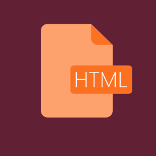
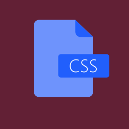
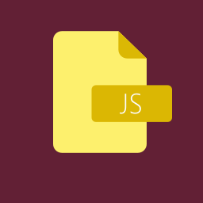
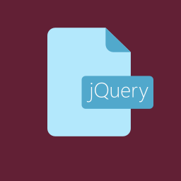
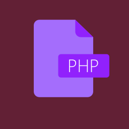
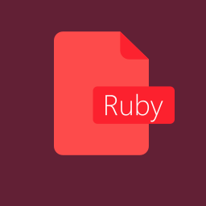
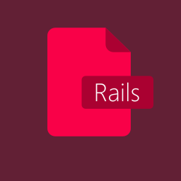

Skills & Knowledge
Frontend
 HTML 5  CSS 3  JavaScript  jQueryBackend
 PHP 5.X / 7.X  Ruby  Ruby on Rails SQL / MySQL
SQL / MySQL
This page is a little portfolio page. Visit my actual website for more information.
I am Alice, a female Web-, Application- and Gamedeveloper from germany.
In 2009, I started to learn the basics of Webdesigns. I became interested in more dynamic content very fast and began to teach myself PHP from open source projects and reference databases, a server side script language, nearly every webserver needs today.
When I finally was able to use my knowledge in more professional projects, I became very interested in
community systems and browsergames, which were very popular at the time.
In that moment in time, I already learned how to use
(X)HTML, CSS, JavaScript (Basics) and the most popular database systems MySQL, SQLite2 and later SQLite3 in cobaloration
with each other, to create dynamic projects.
Over the following years, I became more interested in the development of desktop- and server applications. So I learned Ruby in connection with the webframework "Ruby on Rails". In addition to this, I know the basics of Python & C++ and learned, because of my projects, to administrate Linux servers (Mainly Debian).
Since 2014 I started to work on 2d games. In the year after that I quitted the traditional digital graphics creation with software like PhotoShop or GIMP and began to work on my skills in the creation of vector graphics.
Today, my knowledge and skill in development and graphic design coplements each other while working on certain projects.
My Fron End Development Certificate from FCC
SQL / MySQL